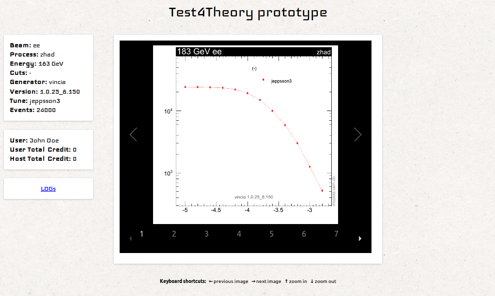

WARNING: Test4Theory web application makes heavy use of JavaScript, HTML5 and CSS3
This site uses JavaScript, HTML5 and CSS3 to show the results and your BOINC credit using technologies like JavaScript, JSON and HTML5.
If you cannot enable JavaScript in your browser's settings or your browser does not support HTML5 and/or CSS3, you will be missing a friendly user interface to the results:
- an interactive gallery with all the figures from the simulations of your computer:
- zoom in and out with a friendly interface,
- browse the figures (next,previous and index) using shortcuts and without going back and forward to see other image,
- swipe movement for flicking through images on touch devices,
- etc.
- and some BOINC statistics.
Here you have an screenshot of the web page with a free, modern and open source web browser like Mozilla Firefox or Google Chrome:

You can access the raw figures and BOINC stats data and the LOGs folder